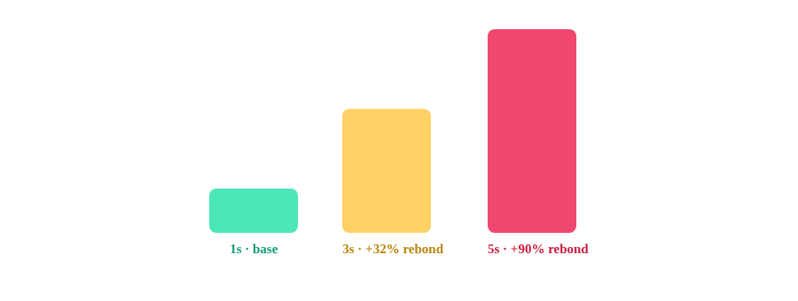

Vitesse de chargement mobile et conversion : le seuil qui fait vraiment mal
Trois secondes. C'est le seuil au-delà duquel la probabilité de perdre un visiteur mobile s'accélère nettement. La majorité des sites e-commerce le dépassent déjà sans le savoir précisément — faute de le mesurer avec les bons outils.
La vitesse mobile est l'un des rares sujets CRO où le consensus est large : plus une page met de temps à s'afficher, plus elle perd de visiteurs avant même qu'ils aient vu l'offre. Ce qui est moins souvent précisé, c'est que cette perte n'est pas linéaire : elle s'accélère nettement à partir d'un seuil assez bas.
Le seuil le plus souvent cité : 3 secondes
Les chiffres largement attribués à des analyses Google et répétés depuis dans de nombreuses sources situent la probabilité de rebond en hausse de 32 % lorsque le temps de chargement passe de 1 à 3 secondes, puis de 90 % lorsqu'il passe de 1 à 5 secondes. L'essentiel de la dégradation se joue donc entre 1 et 3 secondes : au-delà, chaque seconde supplémentaire continue de coûter cher, mais le gros de la perte a déjà eu lieu.
Le chiffre par seconde : à manier avec prudence
Un autre chiffre très répété évoque environ 7 % de conversions perdues par seconde de chargement supplémentaire, avec des estimations plus élevées encore spécifiquement sur mobile selon certaines sources — jusqu'à une variance significative d'une étude à l'autre. Ce n'est pas une formule à appliquer mécaniquement à n'importe quel site : c'est un ordre de grandeur qui justifie de prendre la vitesse mobile au sérieux, pas un calcul de ROI précis transposable sans mesure propre.

Pourquoi le temps de chargement total ne suffit pas à diagnostiquer
Le temps de chargement perçu par un visiteur ne se résume pas à un chronomètre global : il dépend surtout de la rapidité d'affichage du contenu principal visible — la même logique que la métrique LCP — et de la réactivité aux premières interactions, proche de ce que mesure l'INP. Un site peut afficher un temps de chargement total correct tout en donnant une impression de lenteur si l'élément principal tarde à apparaître ou si les boutons restent figés quelques centaines de millisecondes après un clic.
Ce qu'il faut mesurer avant d'agir
Avant d'investir dans une optimisation technique, croiser trois sources : les Core Web Vitals réels du site (LCP, INP, CLS, mesurés sur des visiteurs réels et non uniquement en laboratoire), le taux de rebond mobile segmenté par tranche de temps de chargement dans l'outil d'analytics, et un test utilisateur simple sur un mobile d'entrée de gamme avec une connexion dégradée — l'expérience en conditions optimales au bureau masque souvent l'ampleur réelle du problème pour une partie significative de l'audience.
FAQ
À partir de combien de secondes de chargement mobile perd-on vraiment des clients ?
Le point de bascule le plus souvent cité se situe autour de 3 secondes : la probabilité de rebond augmente de 32 % entre 1 et 3 secondes de chargement, puis de 90 % entre 1 et 5 secondes. Ces chiffres, largement attribués à des analyses Google, sont des ordres de grandeur répétés dans de nombreuses sources plutôt qu'une mesure unique et à jour.
Combien de conversion perd-on par seconde de chargement supplémentaire ?
Un chiffre couramment cité évoque environ 7 % de conversions perdues par seconde additionnelle, avec des estimations plus élevées sur mobile selon certaines sources. Ces chiffres varient significativement d'une source à l'autre et doivent être traités comme des ordres de grandeur, pas comme une formule universelle applicable à n'importe quel site.
Mesurer le temps de chargement suffit-il pour diagnostiquer un problème de conversion mobile ?
Non. Le temps de chargement perçu par l'utilisateur dépend surtout de la rapidité d'affichage du contenu principal (proche de la logique du LCP) et de la réactivité aux premières interactions (proche de l'INP), pas uniquement du temps de chargement total de la page. Un diagnostic CRO sérieux croise ces métriques techniques avec le comportement réel observé en analytics.
Envie de savoir ce que la vitesse mobile coûte vraiment à votre conversion ?
Pour aller plus loin, voir la page CRO, et l'article Ce qui fait vraiment baisser le coût par lead sur une landing page.
Pour continuer sur ce sujet.